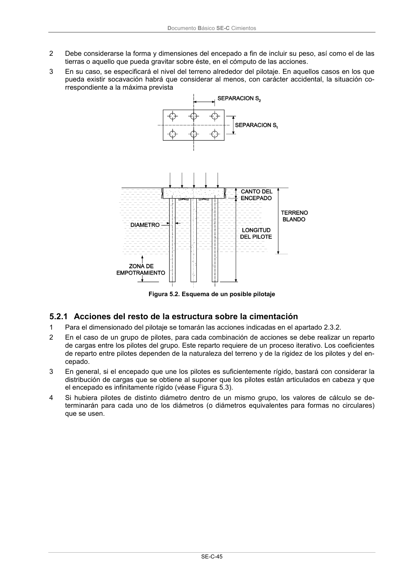

DB-SE-C · Acciones a considerar · versión 2019-12-20 · capa oficial
Formatos: JSON compacto · Markdown · PDF fuente
Ámbito del documento · texto del ámbito · documento y tablas
ID técnico a0112 · PDF pág. 49-50 · jerarquía no validada por persona · contrastado con el literal de la página 49 (candidato tipográfico); no validado por persona · padre: raíz
Acciones a considerar 1 Además de las acciones de la estructura sobre la cimentación se tendrá en cuenta que los pilotes puedan estar sometidos a efectos “parásitos” inducidos por acciones derivadas por el movimiento del propio terreno de cimentación. Documento Básico SE-C Cimientos SE-C-45 2 Debe considerarse la forma y dimensiones del encepado a fin de incluir su peso, así como el de las tierras o aquello que pueda gravitar sobre éste, en el cómputo de las acciones. 3 En su caso, se especificará el nivel del terreno alrededor del pilotaje. En aquellos casos en los que pueda existir socavación habrá que considerar al menos, con carácter accidental, la situación co- rrespondiente a la máxima prevista Figura 5.2. Esquema de un posible pilotaje

PDF fuente redistribuible: copia fiel enlazada en esta página (SHA256 verificado).